赤青黒月 コㇰ→ヌオㇰ⤴フオㇰ⤴シェㇺ→ 【赤青黒月】
[名詞] 赤・青・黒・黄色
月色【月色】が「黄色」を意味するのはパイグ語だけであるため、他の燐字圏の人間にも伝える必要があるときは 赤青黒硫【赤青黒硫】と表記されることも多い。
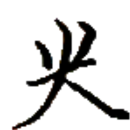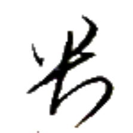
ヒアー→ 【心】
[節要求動詞] ～したい、～したがる
[命令副詞] ～してくれ、～するように
[略号] 地心集【地心集】（アイル共和国文化省）
心下 ヒアー→ウㇳ⤴ 【心下】
[命令副詞＋後置副詞] 〔二字の間に動詞を挟んで〕どうか～してください
心圧 ヒアー→ベゥㇳ⤴ 【心圧】
[名詞] 心理的抑圧、心が圧されること
タムツイにおいて忌まれる。
心善 ヒアー→カイㇳ· 【心善】
[状態動詞] 幸せである、喜んでいる、好きである
[節要求動詞] ～することが好きである
[間投詞] ありがとう
心古行新 ヒアー→ズィアー→モㇰ→ルー⤴ 【心古行新】
[成句] 古いことを思いながらも新しいことに挑む、温故知新
端心 タウ⤴ヒアー→ 【端心】
[名詞] 極端な理想、絵空事
極端であるがゆえに視野が狭まっていることを含意する。
冬心 ヤㇳ→ヒアー→ 【冬心】
[名詞] ヤトヒア、ヤトゥキヤ（アイル共和国シェプ・オキヤウ郡の大都市）
勿心 ナウ·ヒアー→ 【勿心】
[間投詞] 気にしないで、心配しないで、どうぞお構いなく、遠慮なさらず
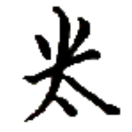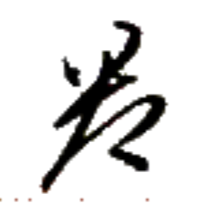
ナン⤴ 【何】
[名詞] 何
[名詞] （主に主語位置で）誰
[連体詞] どういった
如何 エゥㇺ·ナン⤴ 【如何】
[状態動詞] どのようである
[副詞] どのような様子・状態・方法で
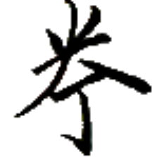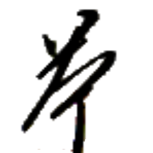
ノン→ 【悪】
[状態動詞] 悪い、良くない
[動詞] 嫌う、嫌がる
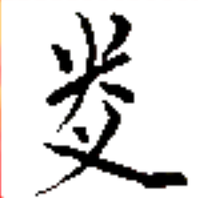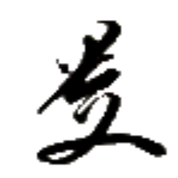
プアㇳ⤴ 【奮】
[動詞] 怒る
[動詞] 感情が高ぶる
[動詞] 〔稀に〕発生する
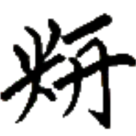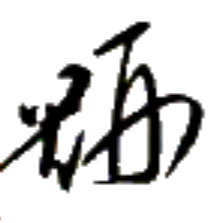
サン⤴ 【識】
[状態動詞] 知っている、分かる
[節要求動詞] ～であることを知っている、～であることが分かる、～であるのかが分かる
耳識 ルアー→サン⤴ 【耳識】
[動詞] 注意を傾けて聞く
[状態動詞] 聞いて分かる
[節要求動詞] ～と伝え聞く
之噫 ア·ア· 【之噫】
[名詞接続詞＋文末助詞] ～のもの
文末に置かれた 之【之】は文末助詞 噫【噫】と同音であり区別がつかないため、「～のもの」で文を終わらせる際はその後ろにさらに文末助詞 噫【噫】を置く。文字で書く際には 之【之】のみを書いて済ませてもよい。
無真噫 ムン→プㇳ·ア· 【無真噫】
[間投詞] そうではありません
事務的に否定する場合に使う。日常的には無如其噫【無如其噫】などと言うことが多い。
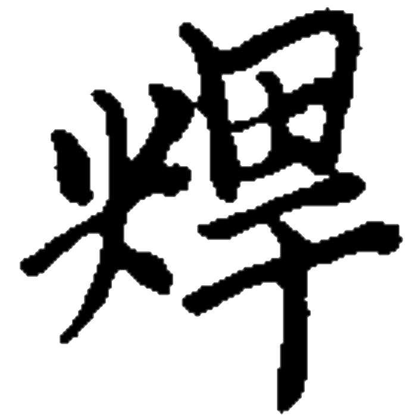 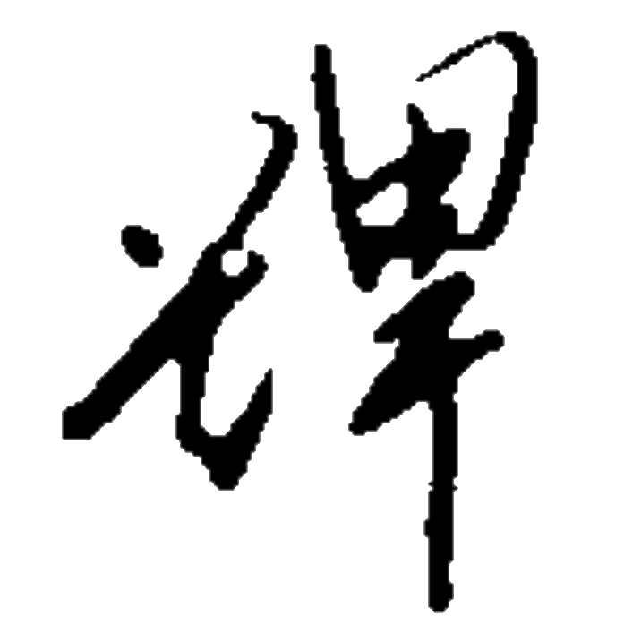
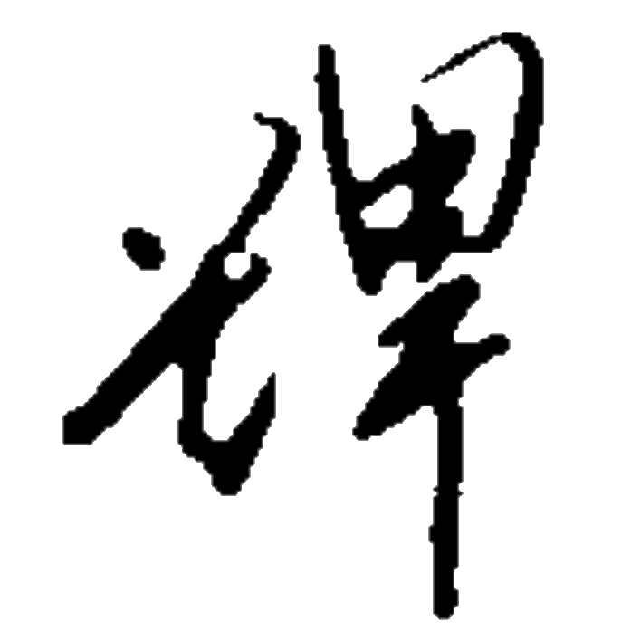
チャㇳ→ 【怖】【怯】
[動詞] 怖がる、恐れる
[節要求動詞] ～することを怖がる、～することを恐れる

 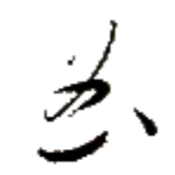
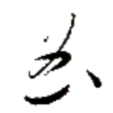


 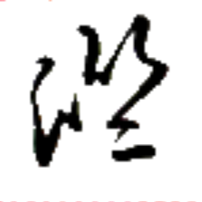
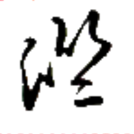
 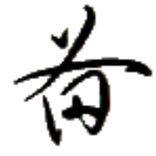
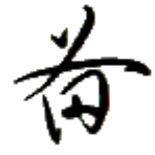
 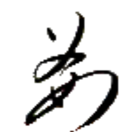
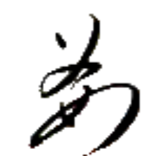
 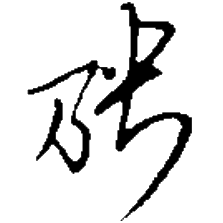
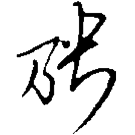